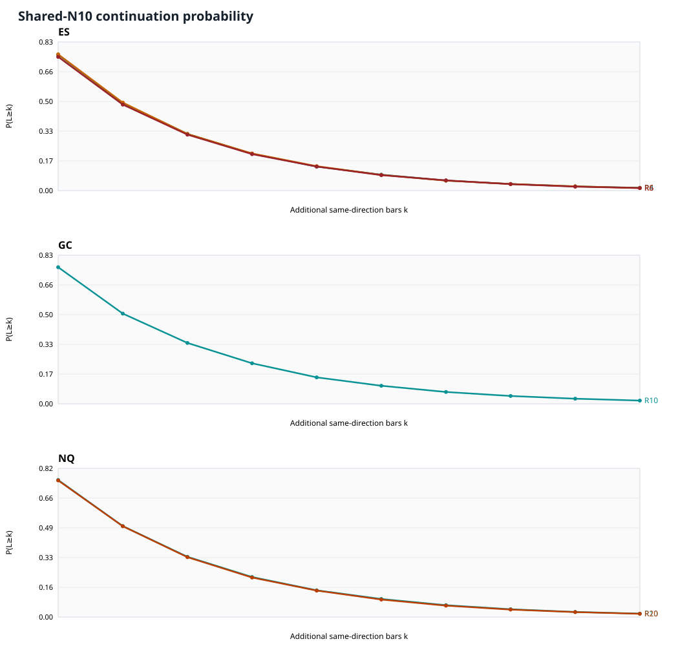
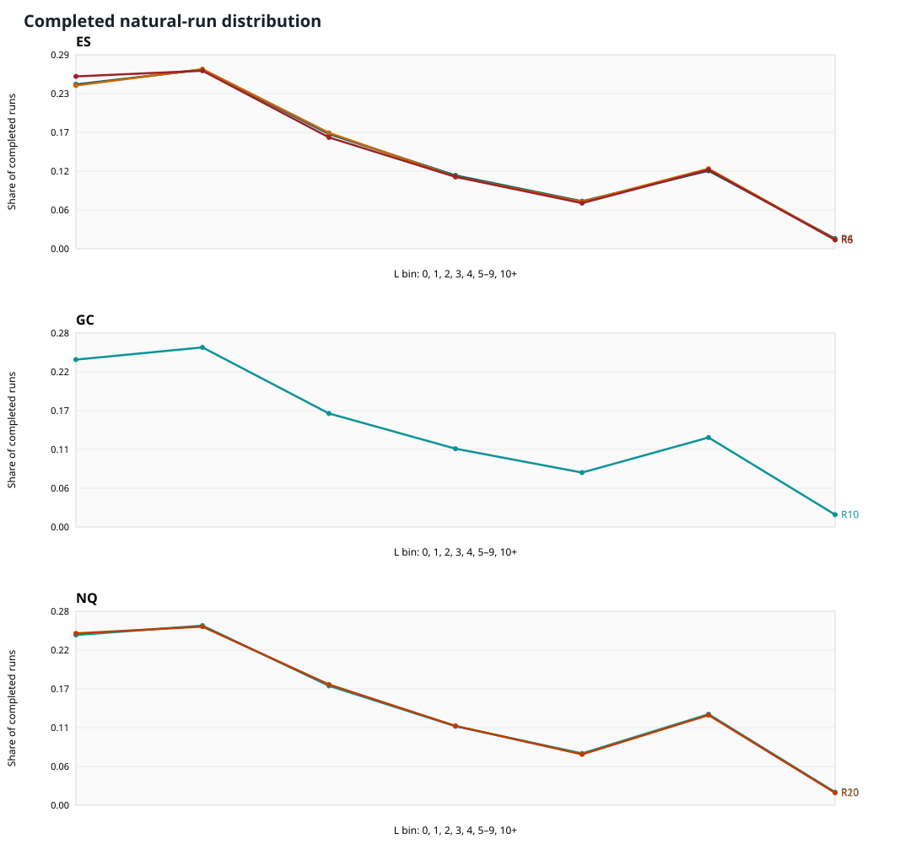
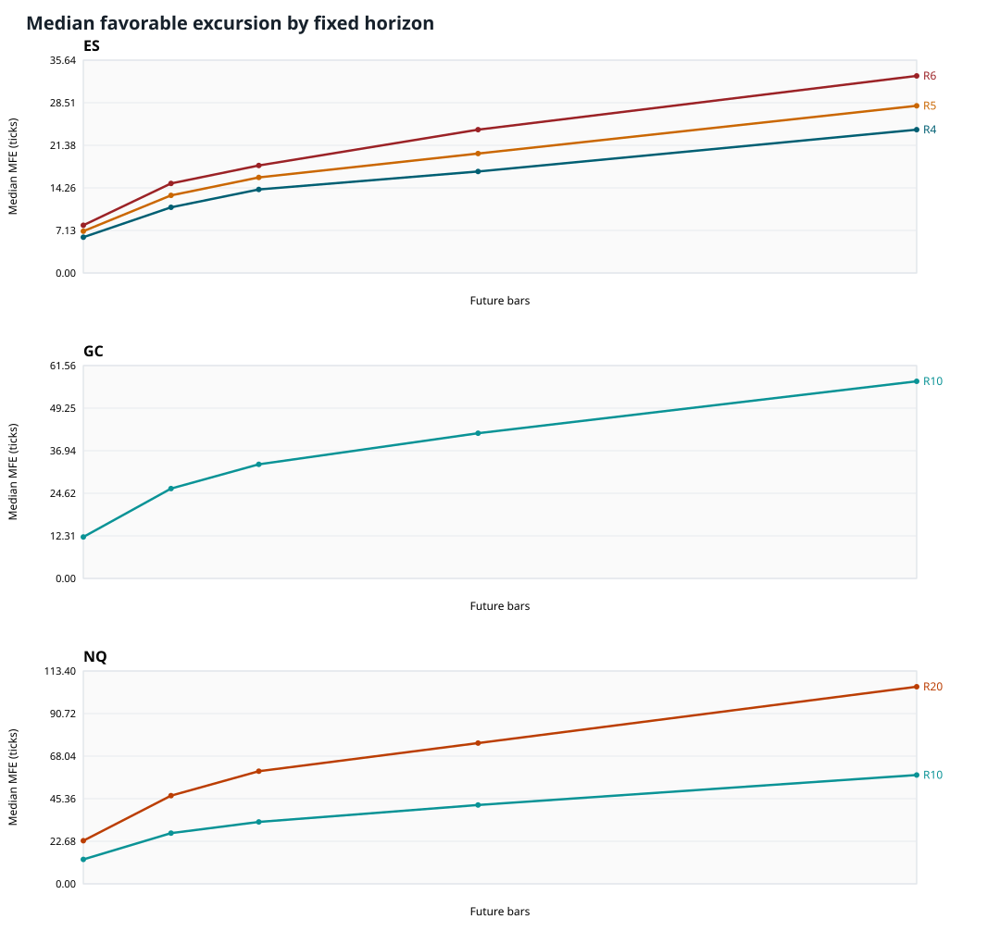
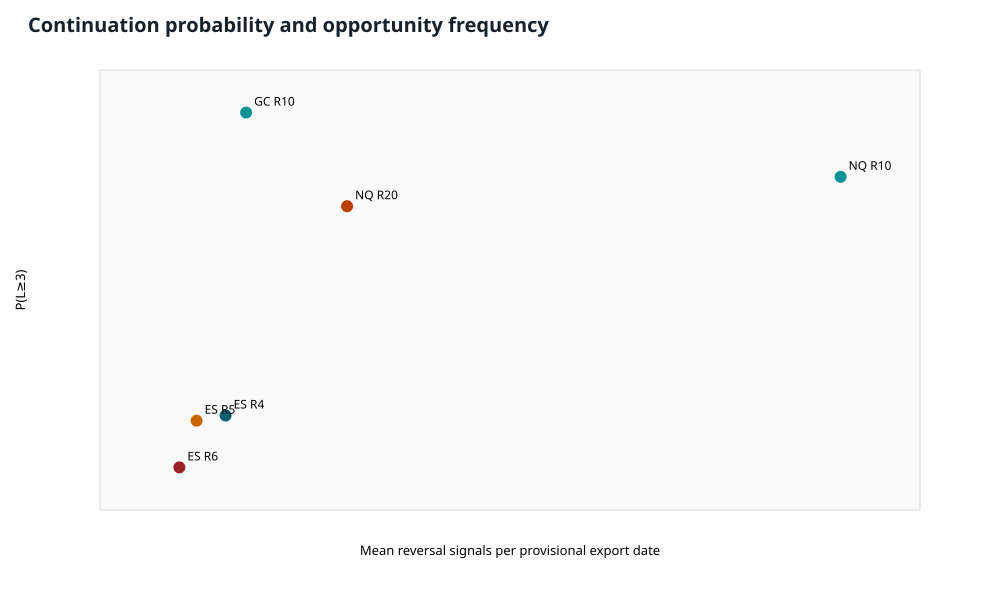
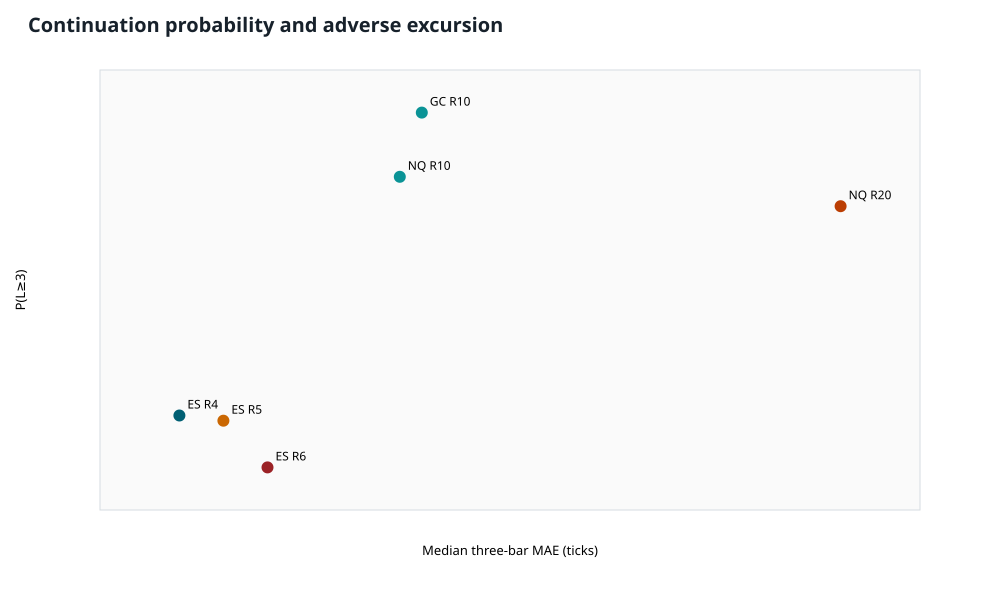
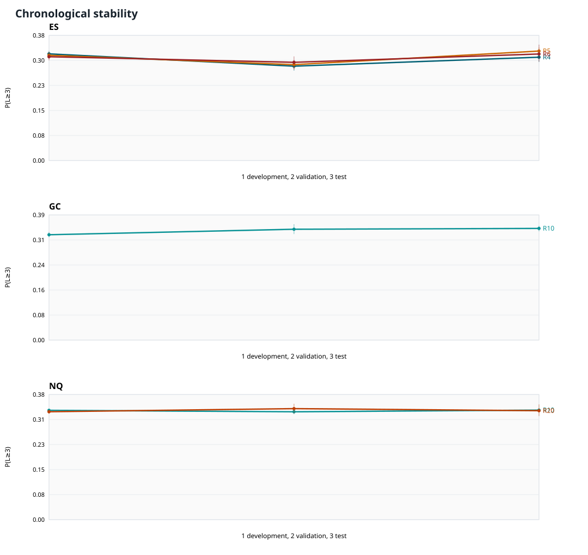
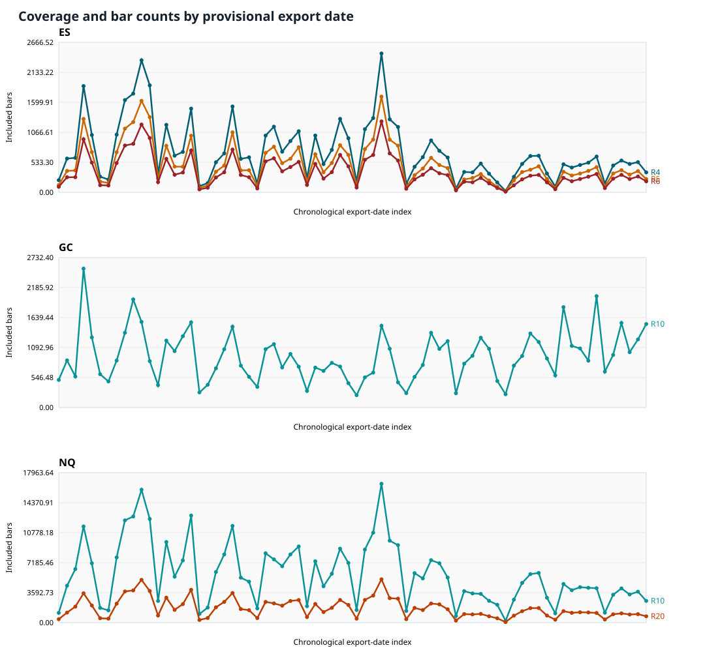
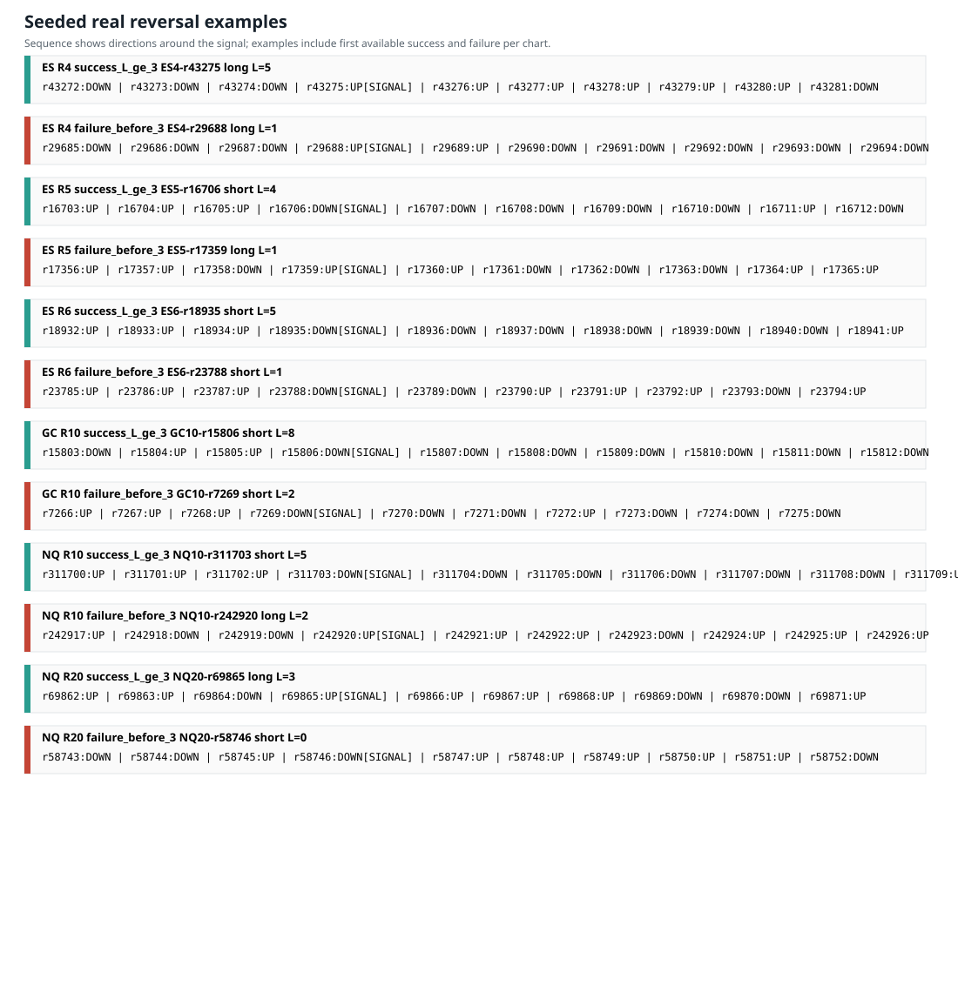

Run 20260906T_full_v1. Chart-behavior research only; not a trading-system backtest.
| asset | range_setting | eligible_n | successes | probability | ci_low | ci_high | probability_T_ge_3 | restricted_mean_min_L_10 | support_status |
|---|---|---|---|---|---|---|---|---|---|
| ES | 4 | 16310.0000 | 5129.0000 | 0.3145 | 0.3069 | 0.3224 | 0.4861 | 2.1142 | supported sample |
| ES | 5 | 11208.0000 | 3520.0000 | 0.3141 | 0.3062 | 0.3222 | 0.4878 | 2.1191 | supported sample |
| ES | 6 | 8162.0000 | 2533.0000 | 0.3103 | 0.3009 | 0.3199 | 0.4769 | 2.0818 | supported sample |
| GC | 10 | 19919.0000 | 6744.0000 | 0.3386 | 0.3324 | 0.3448 | 0.5017 | 2.2301 | supported sample |
| NQ | 10 | 124721.0000 | 41590.0000 | 0.3335 | 0.3309 | 0.3359 | 0.5031 | 2.2188 | supported sample |
| NQ | 20 | 37741.0000 | 12497.0000 | 0.3311 | 0.3257 | 0.3365 | 0.5026 | 2.2003 | supported sample |
| GC | 20 | — | — | — | — | — | — | — | dataset missing; not estimated |
Full Markdown report · Methodology · Data quality · Held-out candidate summary · Run manifest








# Reversal-candle follow-through across ES, GC, and NQ Run `20260906T_full_v1`. This is a chart-behavior study, not a trading-system backtest. All dollar figures are gross contract-value translations of chart excursions, not executable profits. ## Decision summary - **ES:** No clear winner. The frozen development candidate was range 4; held-out P(L≥3) was 30.98% (29.53%–32.35%, N=1985). The development leader did not satisfy every prespecified validation and held-out significance condition - **GC:** No requested range comparison is possible because GC20 is missing. GC10 is described, and GC6 remains inventory-only. - **NQ:** No clear winner. The frozen development candidate was range 10; held-out P(L≥3) was 33.47% (33.02%–33.97%, N=15171). The development leader did not satisfy every prespecified validation and held-out significance condition The ranking target was frozen as the probability of at least three additional same-direction completed bars after a reversal, `P(L≥3)`. A result is called a clear winner only if the development leader also passes the prespecified validation support check and all relevant held-out, multiplicity-controlled comparisons. Smaller range settings have a mechanical candle-count advantage, so the companion excursion, movement, timing-proxy, and opportunity tables must be read with the probability result. ## Headline full-period estimates | Asset | Range | N3 | L≥3 | P(L≥3) | 95% block CI | P(T≥3) | E[min(L,10)] | Signals/export date | |---|---|---|---|---|---|---|---|---| | ES | 4 | 16310.0000 | 5129.0000 | 31.45% | 30.69%–32.24% | 48.61% | 2.1142 | 234.4429 | | ES | 5 | 11208.0000 | 3520.0000 | 31.41% | 30.62%–32.22% | 48.78% | 2.1191 | 161.3857 | | ES | 6 | 8162.0000 | 2533.0000 | 31.03% | 30.09%–31.99% | 47.69% | 2.0818 | 117.9000 | | GC | 10 | 19919.0000 | 6744.0000 | 33.86% | 33.24%–34.48% | 50.17% | 2.2301 | 285.8571 | | NQ | 10 | 124721.0000 | 41590.0000 | 33.35% | 33.09%–33.59% | 50.31% | 2.2188 | 1783.0714 | | NQ | 20 | 37741.0000 | 12497.0000 | 33.11% | 32.57%–33.65% | 50.26% | 2.2003 | 540.2286 | Every estimate above is conditional on a complete threshold-specific future window. Boundary exclusions are in `tables/continuation_thresholds.csv`; incomplete observations were not counted as failures. `P(T≥3)` is the separate interpretation that includes the reversal candle and equals `P(L≥2)`. ## Evidence and interpretation - The held-out candidate summary is in `tables/cross_asset_summary.csv`; development selection, validation checks, and the final frozen decision are in `tables/candidate_selection.csv` and `selection_ledger.json`. - Fixed-horizon MAE, MFE, and signed terminal movement for 1/3/5/10/20 future bars are in `tables/excursions_fixed.csv`. They use only bars after the signal close and report ticks, native price units, and gross dollars per standard contract. - `tables/excursions_through_break.csv` includes the first breaking bar. `tables/excursions_run_only.csv` excludes it and is explicitly hindsight-conditioned potential. - Completed run bins, censored counts, summaries, the shared-N10 continuation curve, and conditional continuation are in the run-length tables. - Raw timestamp differences are reported only as proxies. The exports do not identify timezone, timestamp meaning, or bar completion semantics, and repeated timestamps prevent exact elapsed-time or intrabar-extreme claims. - Paired export-date block bootstrap intervals use 2,000 replicates and seed 20260906. Three-date circular-block sensitivity is alongside the one-date result. Held-out pairwise p-values use Holm familywise-error control. - The same-chart persistence baseline compares reversal signals with ordinary non-doji directional bars. It is context for chart persistence, not evidence of tradable alpha. ## Figures - [Common-cohort continuation curves](figures/continuation_curves.svg) - [Completed run-length distribution](figures/run_length_distributions.svg) - [MAE/MFE profiles](figures/excursion_profiles.svg) - [Probability versus opportunities](figures/probability_opportunities.svg) - [Probability versus adverse excursion](figures/probability_adverse_tradeoff.svg) - [Raw timestamp proxy to three bars](figures/time_to_three_proxy.svg) - [Chronological stability](figures/chronological_stability.svg) - [Coverage and bar counts](figures/coverage_gap.svg) - [Seeded successful and failed examples](figures/annotated_examples.svg) ## Data identity and quality The source filenames identify **Range XV**, not verified Range XC. Official ATAS documentation lists RangeX, RangeXV, RangeUS, and RangeZ and states that exact construction algorithms are not disclosed. The study therefore consumes the exports as given and does not reconstruct or claim to reverse-engineer the bars. See [ATAS chart types](https://help.atas.net/en/support/solutions/articles/72000602350) and [ATAS Range XV](https://atas.net/blog/specific-of-the-range-xv-chart/). All available files were explicitly checked as headerless, semicolon-delimited, five-column timestamp/open/high/low/close data. The configured `%Y-%d-%m %H:%M:%S` parse succeeds for every source row. Original row order and repeated timestamps are preserved. The final row of each export is conservatively excluded because completion cannot be verified. Full audit results are in `data_quality.md` and `tables/data_audit.csv`. GC20 is missing. GC6 was found but not substituted or analyzed. Timezone, bar-open versus bar-close timestamp semantics, completed-bar status, exact ATAS settings, data-feed provenance, and contract-history/adjustment metadata remain unresolved. ## Contract units The conversions use official standard-contract specifications: ES 0.25 index point and $12.50/tick, NQ 0.25 index point and $5/tick, and GC $0.10/troy ounce and $10/tick. Sources: [CME ES FAQ](https://www.cmegroup.com/trading/equity-index/eminifaq.html), [CME NQ specification](https://www.cmegroup.com/trading/equity-index/files/emini-nasdaq-100-futures-options.pdf), and [CME Gold fact card](https://www.cmegroup.com/trading/metals/files/fact-card-gold-futures-options.pdf). ## Reproducibility and table index Run from the project root using the exact command in `analysis/01_reversal_follow_through/README.md`. The manifest records input, configuration, and implementation hashes, dependency versions, seed, exclusions, and output hashes. Event-level CSVs make every aggregate traceable to source file and row. Key tables: [headline](tables/headline.csv), [threshold probabilities](tables/continuation_thresholds.csv), [paired comparisons](tables/paired_comparisons.csv), [fixed excursions](tables/excursions_fixed.csv), [run summaries](tables/run_length_summary.csv), [timing proxies](tables/timing_milestones_proxy.csv), [opportunities](tables/opportunities.csv), [stability](tables/stability.csv), and [real-event reconciliation](tables/manual_reconciliation.csv).